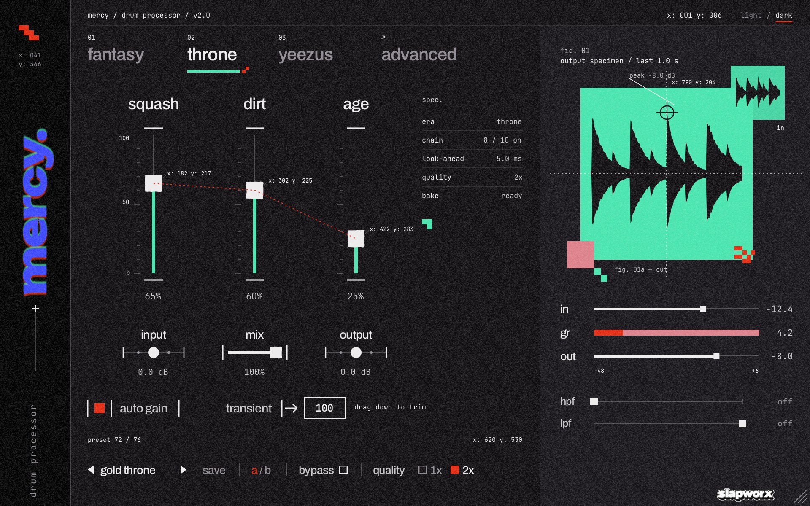
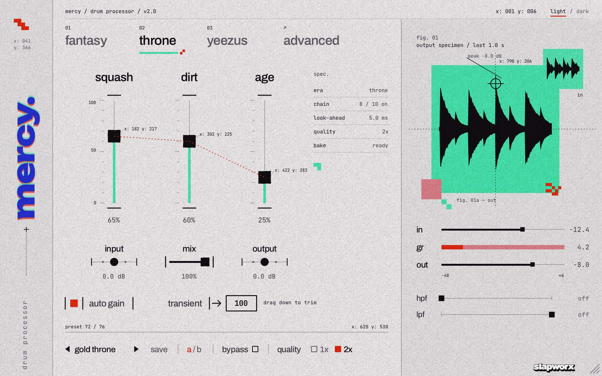
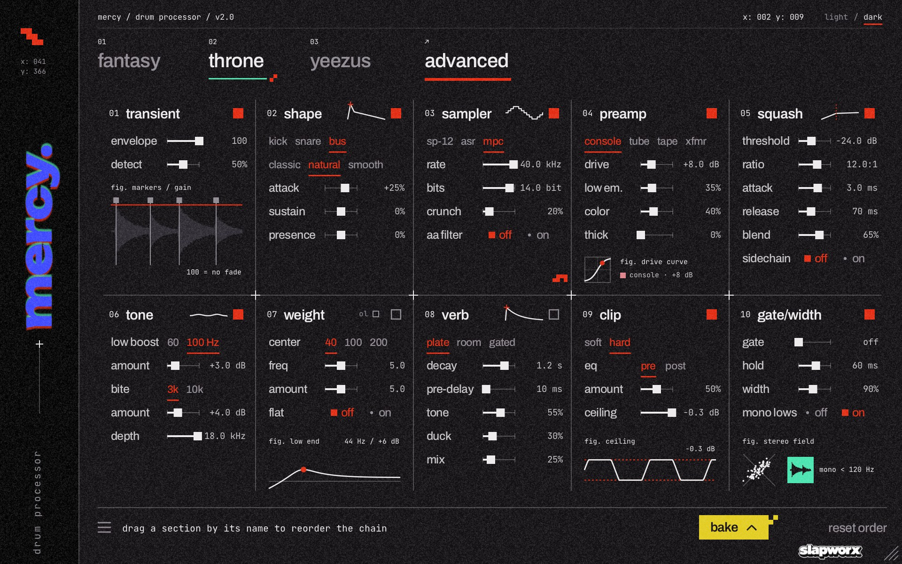
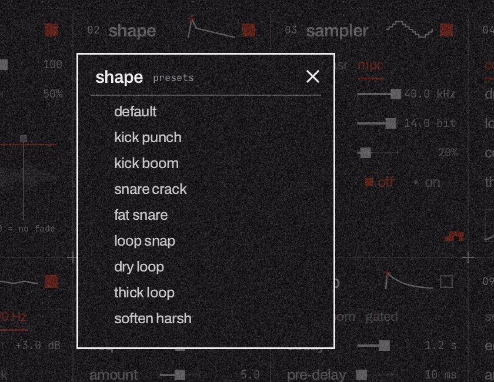
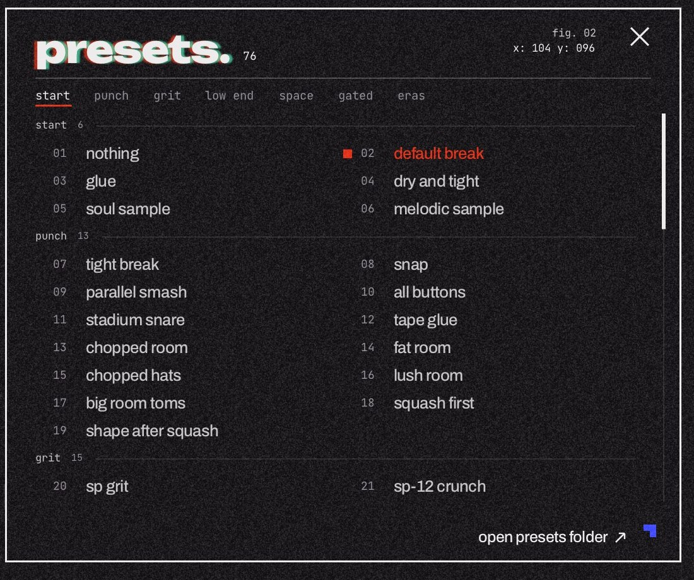
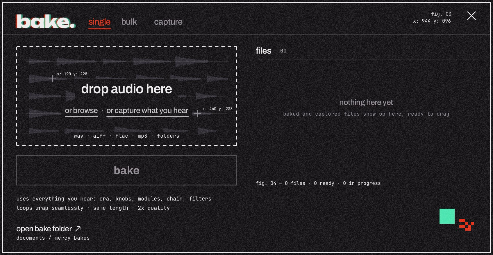
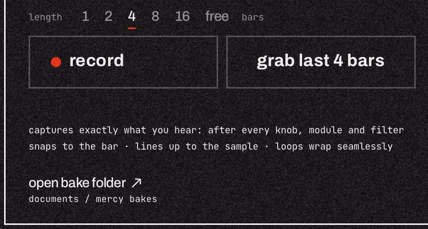

drum processor
mercy / drum processor / user manuallight / dark
fig. 00 — manual
mercy.
A drum processor inspired by three eras of Kanye West: My Beautiful Dark Twisted Fantasy, Watch the Throne and Yeezus.
version 2 · windows (vst3 · clap) · mac, apple silicon (au · vst3 · clap)
by slapworx
contents
mercy / contentsx: 000 y: 002
fig. 01 — contents
inside.
01
installthe installers for windows and mac, and finding MERCY in your DAW
03
02
quick starta good sound in a minute
04
03
the three erasfantasy, throne, yeezus
05
04
the main pagesquash, dirt, age, meters, filters, the bottom bar
06
05
the advanced pageten modules, the chain order, module presets
08
06
presetsseven groups, saving, renaming, deleting
11
07
bakeprint MERCY's sound into audio files: single, bulk
12
08
capturerecord or grab what you hear, snapped to the bar
14
09
controls and tipsmouse, keyboard, sizing, the look
15
10
troubleshootingand where your files live
16
01 · install
mercy / 01 / installx: 001 y: 003
01
install.
windows 64-bit · VST3 + CLAP
- Close your DAW.
- Unzip the download and double-click Install MERCY.exe.
- If Windows shows "Windows protected your PC", click More info, then Run anyway. Then click Yes when Windows asks to allow changes.
- Click Next, keep VST3 and CLAP ticked (or untick the one you don't use), then Install.
- Open your DAW and scan for new plugins. FL Studio: Options › Manage plugins › Find installed plugins. MERCY is listed under slapworx.
To remove MERCY: Settings › Apps › Installed apps › MERCY (slapworx) › Uninstall. Your presets and bakes are kept.
mac apple silicon (m1 and newer) · AU + VST3 + CLAP
- Quit your DAW.
- Unzip the download and double-click Install MERCY.pkg.
- If macOS says it can't check the installer, right-click (or Control-click) it, choose Open, then Open again.
- Click Continue. On the next screen, keep Audio Unit, VST3 and CLAP ticked, or untick what you don't use. Click Install and enter your Mac password.
- Open your DAW. In Logic Pro and GarageBand, MERCY is under Audio Units › slapworx › Mercy.
Installing by hand instead? The plain plugin files are in the
manual install folder. Windows: copy
Mercy.vst3 into
C:\Program Files\Common Files\VST3\ and
Mercy.clap into
C:\Program Files\Common Files\CLAP\ (unblock the zip first: right-click › Properties › Unblock). Mac: copy them into
/Library/Audio/Plug-Ins/ (Components, VST3, CLAP). If macOS then won't open them, run this in Terminal:
sudo xattr -dr com.apple.quarantine /Library/Audio/Plug-Ins/Components/Mercy.component /Library/Audio/Plug-Ins/VST3/Mercy.vst3 /Library/Audio/Plug-Ins/CLAP/Mercy.clap
Intel Macs aren't supported. MERCY sounds exactly the same on Windows and Mac: every build is checked so both render bit-identical audio, and presets and projects move between them freely.
02 · quick start
mercy / 02 / quick startx: 002 y: 004
02
quick start.
MERCY goes on drums: a break, a loop, a kit bus, a kick or a snare. Put it on the track as an insert effect.
- Pick an era at the top: fantasy, throne or yeezus. Each one is a whole voicing of the chain.
- Or pick a preset. Click the preset name in the bottom bar (it opens on "default break") and choose from 76 presets in seven groups, or step through them with the ‹ › arrows.
- Shape it with the three big sliders: squash (compression), dirt (saturation and clipping) and age (sampler crunch). The middle of each slider is the preset's own setting.
- Blend it with mix, and keep auto gain on so louder never fools you into thinking better. Use output to sit it in the mix.
- Go deeper on the advanced page: ten modules you can tweak, switch off and reorder.
- Print it. Open bake on the advanced page and drop audio on it, or capture what's playing, and drag the result straight into your DAW.

fig. 1 — the main page, dark look, preset "gold throne".
03 · eras
mercy / 03 / the three erasx: 003 y: 005
03
three eras.
The era tabs are MERCY's biggest control. Each one changes the voicing of the whole chain and sets the advanced page up for that sound. The interface takes the era's colors too.
fantasy2010
Inspired by My Beautiful Dark Twisted Fantasy: big, glossy and dark. Huge snares, thick lows, a polished mix that still hits hard.
Sets up: a plate verb, a little weight and some preamp thick.
throne2011
Inspired by Watch the Throne: soul-sample swagger, punchy and expensive. Tight rooms, crisp chops, gold-plated compression.
Sets up: a room verb and a little thick.
yeezus2013
Inspired by Yeezus: industrial, distorted and confrontational. Crushed low end, hard clipping, gates that slam shut.
Sets up: a gated verb and heavy weight, with no thick, because the crushed low end is the point.
what clicking an era does
- Changes the voicing of every stage and loads that era's starting point into the advanced page.
- Leaves transient and shape alone, so your trim and transient shaping stay as they are.
- Sets the verb up for the era (plate, room or gated) but doesn't switch it on. Turn it on yourself on the advanced page when you want space.
- Presets can use any era. The tab shows which one a preset is built on.
04 · main page
mercy / 04 / the main pagex: 004 y: 006
04
main page.
the three sliders
| control | what it does |
|---|
| squash | Compression with a parallel blend. Higher = more glue and pump, lower = more open. |
| dirt | Preamp saturation feeding the clipper. Higher = more grit, edge and loudness. |
| age | The sampler stage: lower sample rate, fewer bits and pitch crunch, like an old drum sampler. All the way down = off. |
At the middle (12 o'clock), squash and dirt use exactly what's set on the advanced page. Turn them up or down to push or pull those settings without opening it.
level and blend
| input | Level into MERCY (−24 to +24 dB). More input drives every stage harder. |
| mix | Dry / processed blend. 100% = fully processed. |
| output | Final level (−24 to +24 dB). |
| auto gain | Keeps the output about as loud as the input, so you judge the sound and not the volume. On by default. |
| transient |→ 100 | An Ableton-style transient trim ("Beats" warp with preserve transients). Drag the box down to chop the tail of every hit shorter. 100 = off; the box turns red when it's working. |
fig. 01 and the meters
| fig. 01 | The live output over the last second, drawn like a printed waveform. The crosshair sits on the loudest hit with its peak level. The small square in the corner is the input, so you see before and after at a glance. |
| in / gr / out | Input level, gain reduction (the red part) and output level. |
| hpf / lpf | Gentle high-pass (20 Hz–2 kHz) and low-pass (20 kHz–500 Hz) filters after everything else. Far left / far right = off. |
| spec. | A small readout: era, how many modules are on, look-ahead, quality and bake status. |
04 · main page
mercy / 04 / the main pagex: 004 y: 007
the bottom bar
| ‹ preset › | The current preset. Click the name for the full preset list (page 11); the arrows step to the previous or next preset. A * after the name means you've changed it since loading. |
| save | Name and save your own preset. |
| a / b | Two slots to compare settings. Click to switch between a and b; each remembers its own sound. |
| bypass | Hear the dry signal. |
| quality 1x / 2x | 2x runs MERCY oversampled: cleaner distortion and clipping, a little more CPU. Bakes always use 2x. |
the top bar
| fantasy / throne / yeezus | The era (page 05). |
| advanced | Opens the advanced page. Click it again to come back. |
| light / dark | Switches the look. Your choice is saved with the project. |

fig. 2 — the same page in the light look.
MERCY adds a 5 ms look-ahead (so the transient tools catch the very front of each hit). It reports this to your DAW, which lines everything up for you.
05 · advanced
mercy / 05 / the advanced pagex: 005 y: 008
05
advanced.
Ten modules, in the order the sound flows through them: left to right, top row then bottom row.

fig. 3 — the advanced page.
- On / off: the red square at the top right of each module switches it on or off.
- Reorder the chain: drag a module by its name onto another slot. The others slide over to make room while you drag. reset order (bottom right) puts the chain back. Presets can set their own order.
- Module presets: click a module's name (without dragging) for a small list of presets for just that module. Picking one changes only that module; default puts it back to its starting point for the current era.
- Figures: the small drawings in each module react to your settings: transient markers, the drive curve, the clip ceiling, the stereo field and more.
05 · modules
mercy / 05 / the modulesx: 005 y: 009
the modules
trtransient
The Ableton-style trim from the main page. It only takes away: each hit restarts a fade, so tails get shorter.
envelope 0–100 (100 = no fade) · detect how easily hits are picked up
shshape
A transient shaper that can add or remove attack and sustain.
kick / snare / bus what you're feeding it · classic / natural / smooth character · attack and sustain −100 to +100% · focus aims it at one range (tight on kick, body on snare, presence on bus). All at 0 = no change.
smsampler
Old drum-sampler character: the grit and pitch crunch of classic 12-bit machines.
sp-12 / asr / mpc model · rate 4–44.1 kHz · bits 4–16 · crunch · aa filter smooths the aliasing
prpreamp
Saturation in four flavors.
console / tube / tape / xfmr flavor · drive 0–24 dB · low em. low-end emphasis · color · thick lets the lows go around the saturation (the split rises from 60 to 250 Hz as you turn it up), so the top gets the grit and the kick and sub stay full. 0 = off.
sqsquash
Compressor with a parallel blend.
threshold · ratio 1–20:1 · attack 0.1–30 ms · release 20–500 ms · blend dry/compressed · sidechain high-pass, so the kick doesn't pump everything
totone
Broad, musical EQ moves.
low boost 60 / 100 Hz + amount (0–12 dB) · bite 3k / 10k + amount · depth a top-end roll-off, 2–20 kHz
wtweight
A bass resonance tool, measured against and matched to UAD's Little Labs Voice of God: same controls, same numbers. It starts off; the fantasy and yeezus eras switch it on.
center 40 / 100 / 200 61–20 Hz (subs, 808s), 171–57 Hz (kick body), 306–102 Hz · freq 0 = top of the range, 10 = bottom · amount 0 = flat, 10 = full resonance (up to about +18 dB) with a steep cut under it · flat the same bump with the lows under it left alone. The ol light flashes red when weight pushes past 0 dB.
rvverb
A reverb tuned for drums. The kick stays out of it (built-in low cut). Off unless you turn it on.
plate / room / gated mode · decay 0.1–4 s (called length in gated mode: how long the tail stays open) · pre-delay 0–100 ms · tone dark to bright · duck pushes the tail down under each hit · mix
clclip
The final edge.
soft / hard · eq pre / post swaps the order of tone and clip · amount · ceiling −12 to 0 dB
gwgate/width
Gate and stereo image.
gate threshold (off at the bottom) · hold 5–500 ms · width 0–200% · mono lows keeps everything under 120 Hz in mono
05 · module presets
mercy / 05 / module presetsx: 005 y: 010
module presets
Click a module's name to open its own preset list. The preset that matches the module's current settings is marked in red.

fig. 4 — shape's module presets.
| transient | light trim, tight, chopped, gated, catch ghosts, big hits only |
| shape | kick punch, kick boom, snare crack, fat snare, loop snap, dry loop, thick loop, soften harsh |
| sampler | sp-12 style, sp-12 pitched down, asr warm, asr grit, mpc60 style, mpc 2000 clean, crushed, am radio |
| preamp | console glue, console push, tube warmth, tube burn, tape, tape hot, iron, iron fuzz |
| squash | bus glue, punch, all buttons, parallel smash, pump, room lift, gentle |
| tone | warm, big low end, 100 hz thump, snare bite, air, dark, radio |
| weight | kick weight, 808 chest, sub bloom, kick body, tight thump, snare body, big weight |
| verb | snare plate, big plate, dark plate, tight room, drum room, big room, gated snare, industrial gate, long gate |
| clip | clean, soft kiss, soft loud, hard edge, hard slam, low ceiling grit |
| gate/width | wide, open stereo, narrow, mono, tight gate, choke |
Every list also has default, which puts the module back to its starting point (for modules the era drives, the current era's setting).
why the order matters
Moving a module changes what it works on. A few ideas that presets in the list use:
- Verb early: the transient trim chops the reverb tail, squash pumps it, or the gate cuts it short.
- Clip before squash: the compressor tames the clipped peaks for a denser, flatter hit.
- Sampler last: everything gets crunched together, like resampling a finished loop.
- Weight last: the low-end bump goes on after the saturation instead of being flattened by it.
06 · presets
mercy / 06 / presetsx: 006 y: 011
06
presets.
Click the preset name in the bottom bar to open the list. 76 factory presets, grouped by what they do to the sound. The bar under the title jumps straight to a group, and the red underline follows the group you're looking at as you scroll.
start6
clean starting points: nothing, default break, glue
punch13
compression and transients: snap, parallel smash, tape glue
grit15
sampler, lo-fi, crunch: sp-12 crunch, mpc thump, dusty vinyl
low end9
weight and sub: 808 weight, sub bloom, kick body
space19
the reverb presets: plate snare, dark plate, drowned break
gated6
gated snare, gated toms, industrial gate
eras8
the signature sounds: dark fantasy, gold throne, yeezus raw
nothing switches every module off: no processing at all. Start from it to build a sound from scratch.

fig. 5 — the preset list.
your own presets
- save (bottom bar) opens a name box. Type a name and press Enter. The suggested name is selected, so you can just start typing. Esc cancels.
- Your presets appear in a user group at the end of the list (and in the group bar once you have one).
- Rename or delete: right-click one of your presets, or hover it and click the small ×. Delete always asks "delete? yes / no" first. Factory presets can't be changed.
- Deleting the preset you're using doesn't change your sound; the name just goes back to "default break *".
- open presets folder (bottom of the list) opens the folder with your presets file. It's one text file, the same on Windows and Mac, so you can copy it between computers.
07 · bake
mercy / 07 / bakex: 007 y: 012
07
bake.
Print MERCY's sound into audio files without leaving the plugin. Open it with bake at the bottom right of the advanced page.

fig. 6 — the bake panel.
single
- Dial in a sound you like.
- Drag audio onto the drop zone: from your DAW's browser, Explorer or Finder. Loops, one-shots, stems or full beats; wav, aiff, flac or mp3. Or click or browse.
- Press bake.
- Grab the finished file by its drag → handle and drop it into your DAW: the playlist, a track, a sampler. Then drop the next file.
Change your settings and press bake again to re-bake with the new sound.
07 · bake
mercy / 07 / bakex: 007 y: 013
bulk
- Drop many files at once, or a whole folder (subfolders too). MERCY switches to bulk by itself.
- Press bake all. Then drag the files out one by one, all together with drag all →, or press export to desktop to put the whole batch in a new folder on your desktop (for example "Mercy – gold throne – Oct 30"), which opens when it's done.
what a bake does
- Uses everything you hear: era, sliders, every module, the chain order, transient, filters, mix, output and auto gain.
- Always renders at 2x quality, and ignores bypass.
- Keeps the exact length and timing of the original. Loops wrap seamlessly: MERCY warms up on the loop first, so the first hit sounds like every other hit and the end flows into the start.
- Writes 24-bit WAV at the file's own sample rate. If the result would go over 0 dB, it's saved as 32-bit float instead so nothing clips ("32-bit" in the list). Turn output down if you'd rather have 24-bit.
- Names files after the original and the preset, like
amen_mercy_gold-throne.wav, in Documents › Mercy Bakes. Nothing is ever overwritten. open bake folder opens it.
- Runs in the background, so your DAW keeps playing smoothly. Bakes carry on while the plugin window is closed.
good to know
- MP3s carry a little encoder silence at the edges, so MP3 bakes come out slightly longer and won't loop perfectly. Use WAV for loops.
- With the sampler on, every pass of a loop varies very slightly (live too), so a bake can't be bit-identical to one live pass. With the sampler off, a bake is bit-identical to what MERCY plays live.
- If dragging files in or out ever doesn't work in your DAW, use or browse to load and open bake folder to grab the results.
08 · capture
mercy / 08 / capturex: 008 y: 014
08
capture.
Bake what you hear, live. The capture tab in the bake panel records MERCY's output while your track plays, snapped to your DAW's bars, so loops come out whole and line up to the sample.
grab last N bars
Just played something great? Press grab and MERCY saves the last N bars that fully played. It's always listening: the strip at the top shows the recent history.
record
Press record to arm. Recording starts on the next bar line and stops by itself after N bars. With free, it runs until you press stop, which finishes the current bar so the loop stays whole.
length
1, 2, 4, 8, 16 bars, or free.

fig. 7 — the capture controls.
- Captures exactly what you hear: after every slider, module and filter.
- With the transport stopped, record starts on the first sound and the silence after you stop is trimmed.
- MERCY starts listening the first time you open the bake panel in a session, and keeps about a minute of history.
- Takes are saved next to your bakes as
capture_<preset>_<bpm>bpm_<n>bars_001.wav, show up in the same file list and drag out the same way.
09 · controls
mercy / 09 / controls and tipsx: 009 y: 015
09
controls.
| do this | to |
|---|
| drag | adjust a control |
| shift + drag | adjust finely |
| double-click | reset a control to its default |
| mouse wheel | nudge a control, or scroll a list |
| right-click | type an exact value; Enter confirms, Esc cancels |
| bottom-right corner | drag to resize the window, 75% to 200% |
| Esc | close an open list or panel |
tips
- Judge at equal loudness. Keep auto gain on, or level-match with output before you compare with bypass.
- Use a / b to compare two directions without losing either.
- Quality 2x is cleaner on heavy dirt and clipping. Switch to 1x on a big session if you need the CPU.
- Starting points for shape: tighter kick: kick, natural, attack +40, sustain −20, tight +40 · snappy snare: snare, natural, attack +50 · dry roomy loop: bus, natural, sustain −50 · thick loop: bus, smooth, sustain +40.
- Some presets can peak a little above 0 dB on breaks that already sit near 0 dBFS. Pull output down if your master clips.
- MERCY remembers where you were: page, panels, preset, a/b slots and the look are saved with your project.
- Motion follows your system: if "reduce motion" (Mac) or animations (Windows) are off, MERCY's animations are too.
10 · troubleshooting
mercy / 10 / troubleshootingx: 010 y: 016
10
help.
| if | try |
|---|
| MERCY doesn't show up | Run the installer again (close your DAW first), then rescan. FL Studio: Options › Manage plugins › Find installed plugins. Logic: Settings › Plug-in Manager, select MERCY › Reset & Rescan Selection. |
| Windows blocks the installer | On "Windows protected your PC", click More info › Run anyway. |
| macOS blocks the installer | Right-click Install MERCY.pkg › Open › Open. |
| "couldn't be replaced" | The plugin is in use: close your DAW completely and run the installer again. |
| Keys don't work in your DAW | While a name box or typed value is open, MERCY takes the keyboard. Press Enter or Esc and your DAW's shortcuts come back. |
| The master clips | Pull output down, or lower dirt and clip amount. |
| Drag and drop doesn't work | Use "or browse" to load files and "open bake folder" to grab the results. |
| Automation shows odd numbers | DAW automation lanes show raw values (0.5 instead of 50%). That's normal. |
where your files live
| bakes and captures | Windows Documents\Mercy Bakes · Mac Documents/Mercy Bakes |
| your presets | Windows %APPDATA%\Mercy\user_presets.txt
Mac ~/Library/Application Support/Mercy/user_presets.txt |
credits
MERCY is made by slapworx · slapworx.net. Built with DPF (DISTRHO Plugin Framework, ISC license), the fonts Archivo, Unbounded and JetBrains Mono (SIL Open Font License) and dr_libs (public domain / MIT-0). The licenses are in the licenses folder.
MERCY is an independent product, not affiliated with or endorsed by Kanye West, Ableton or Universal Audio. Album titles and product names belong to their owners and are used only to describe the sounds that inspired MERCY.